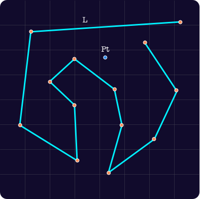
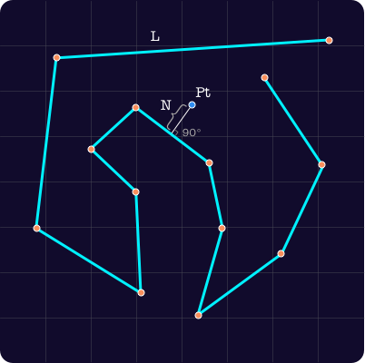
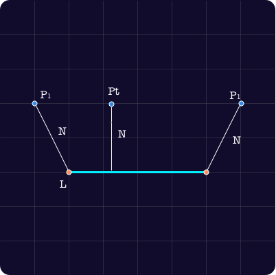
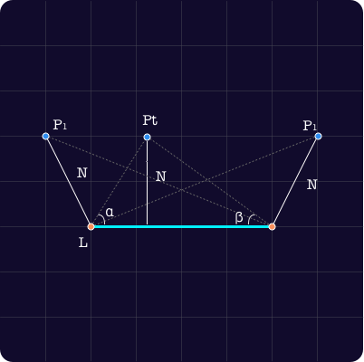
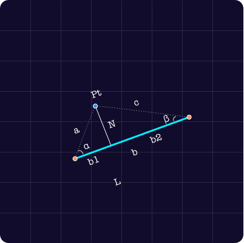

<!DOCTYPE html>
<html>
  <head>
    <meta charset="utf-8" />
    
    <title>点到任意折线组的最短距离（及 turf.js 的实现解析） | 芋头乱炖</title>
    <meta
      name="viewport"
      content="width=device-width, initial-scale=1, maximum-scale=1"
    />

           
<link rel="stylesheet" href="../../../../dist/build.css?v=1637493079960.css">
 
<link rel="stylesheet" href="../../../../dist/custom.css?v=1637493079960.css">


    <script>
      window.isPost = true
      window.aomori = {
          
          
          
      }
      window.aomori_logo_typed_animated = false
      window.aomori_search_algolia = false
    </script>
  <meta name="generator" content="Hexo 5.4.0"></head>
</html>


<body>

    <div class="container">
    <header class="header">
        <div class="header-type">
            
            <div class="header-type-inner">
                
                    <a class="header-type-title" href="/">芋头乱炖</a>
                
    
                
            </div>
        </div>
        <div class="header-menu">
            <div class="header-menu-inner">
                
            </div>
            <div class="header-menu-social">
                
            </div>
        </div>

        <div class="header-menu-mobile">
            <div class="header-menu-mobile-inner" id="mobile-menu-open">
                <i class="icon icon-menu"></i>
            </div>
        </div>
    </header>

    <div class="header-menu-mobile-menu">
        <div class="header-menu-mobile-menu-bg"></div>
        <div class="header-menu-mobile-menu-wrap">
            <div class="header-menu-mobile-menu-inner">
                <div class="header-menu-mobile-menu-close" id="mobile-menu-close">
                    <i class="icon icon-cross"></i>
                </div>
                <div class="header-menu-mobile-menu-list">
                    
                </div>
            </div>
        </div>
    </div>

</div>

    <div class="container">
        <div class="main">
            <section class="inner">
                <section class="inner-main">
                    <div class="post">
    <article id="post-ckw93a2it0000v6wy5n270kxi" class="article article-type-post" itemscope
    itemprop="blogPost">

    <div class="article-inner">

        
          
        
        
        

        
        <header class="article-header">
            
  
    <h1 class="article-title" itemprop="name">
      点到任意折线组的最短距离（及 turf.js 的实现解析）
    </h1>
  

        </header>
        

        <div class="article-more-info article-more-info-post hairline">

            <div class="article-date">
  <time datetime="2021-11-21T11:34:29.000Z" itemprop="datePublished">2021-11-21</time>
</div>

            

            
            <div class="article-tag">
                <ul class="article-tag-list" itemprop="keywords"><li class="article-tag-list-item"><a class="article-tag-list-link" href="../../../../tags/turf-js-GIS-JavaScript/" rel="tag">turf.js GIS JavaScript</a></li></ul>
            </div>
            

            

        </div>

        <div class="article-entry post-inner-html hairline" itemprop="articleBody">
            <h3 id="问题定义："><a href="#问题定义：" class="headerlink" title="问题定义："></a>问题定义：</h3><blockquote>
<p>有一点 Pt，有一任意长度和形状的折线 L： [[P1,P2],[p2,p3],[p3,p4]…]<br>求 Pt 与折线 L 的最近距离 N</p>
</blockquote>
<h3 id="问题澄清："><a href="#问题澄清：" class="headerlink" title="问题澄清："></a>问题澄清：</h3><blockquote>
<p>注意：折线 L 上离 Pt 最近的点，必然在折线上</p>
</blockquote>
<h3 id="使用场景："><a href="#使用场景：" class="headerlink" title="使用场景："></a>使用场景：</h3><blockquote>
<p>对行车轨迹进行贴路修正，轨迹点与路上最短的距离的点既是修正后的点。</p>
</blockquote>
<p>问题分析：<br>假设我们还不知道最终答案，甚至还不知晓解题思路（已经知道的同学先不急，这个题其实的确很简单）<br>我们先画个图分析下可能的思路，按照题目，我们画一个比较“复杂的场景”</p>
<p></p>
<p>其实这个题简单的地方就是，当你把图画出来，基本靠人眼可以一眼判断出答案，如上图，L 中距离 Pt 最近的点很容易用肉眼找到。<br><br>事实上，要找出点到折线的最短距离，必然需要遍历整条折线，计算某条线段与点之间的距离，并取其中最小的值。<br>那如何判断一个点到一条线段的最小距离？这里其实是这道题目最核心的逻辑，基于刚才我们的提示，线段上距离点最近的点，必然在线段内，而不可超出线段之外，我们穷举下点和线段之间的位置关系，不难总结出来，点到线段的最短距离，有两种可能性，一个是点到线段的垂直距离，另一个是点到线段某个端点的距离，点和线段的最短距离必然是这两种情况之一，而且肯定是这两种情况的最小的那个值。<br><br>如果要给这两种情况一个定性的话（什么情况下取垂直距离，什么情况下取到端点的距离），我们可以观察下点在不同位置下，与线段端点连接起来的两个夹角，不难发现，如果最短距离是垂直距离，α 和 β 都是锐角，如果最短距离是到某个端点的距离，则其中必然有一个角度是钝角（大于 90°），当然还存在中间状态，是不是很有意思，不过我们的计算过程不会涉及这个特性，而是会采用三个距离对比的方式，在几何计算上会更快。<br></p>
<p>问题转化：<br>到现在，问题转化成了两个小计算：</p>
<ol>
<li>计算一个点到另一个点的距离，这个很容易，不说了。</li>
<li>计算一个点到线段的垂直距离，这个稍微复杂一些，其实用三角函数也不难。</li>
</ol>
<p></p>
<p>点到线段的垂直距离<br>COSα = (b² + a² - c²)/2ab（余弦定理）<br>sinα = N/a<br>N = a * sinα</p>
<p>其实这里有很多种解法，感兴趣可以去搜索一下。最后我们看一下 turf.js 里的实现把。</p>
<pre><code class="typescript">function nearestPointOnLine&lt;G extends LineString | MultiLineString&gt;(
  lines: Feature&lt;G&gt; | G,
  pt: Coord,
  options: &#123; units?: Units &#125; = &#123;&#125;
): NearestPointOnLine &#123;
  let closestPt: any = point([Infinity, Infinity], &#123;
    dist: Infinity,
  &#125;);

  let length = 0.0;
  flattenEach(lines, function (line: any) &#123;
    const coords: any = getCoords(line);

    for (let i = 0; i &lt; coords.length - 1; i++) &#123;
      //start
      const start = point(coords[i]);
      // 起点到 pt 点的距离
      start.properties.dist = distance(pt, start, options);
      //stop
      const stop = point(coords[i + 1]);
      // 终点到 pt 点的距离
      stop.properties.dist = distance(pt, stop, options);
      // sectionLength，起点到终点的距离
      const sectionLength = distance(start, stop, options);
      //perpendicular，pt到端点距离较长的那条
      const heightDistance = Math.max(
        start.properties.dist,
        stop.properties.dist
      );
      // 当前线段的角度（正北为0，顺时针增加）
      const direction = bearing(start, stop);
      // 从 pt 点开始以垂直于线段的方向画线，长度为pt到起点和终点中最长的那个，找到新的点
      const perpendicularPt1 = destination(
        pt,
        heightDistance,
        direction + 90,
        options
      );
      // 同上，反方向延伸
      const perpendicularPt2 = destination(
        pt,
        heightDistance,
        direction - 90,
        options
      );
      // 将上述取到的两个点，与当前线段取交点
      const intersect = lineIntersects(
        lineString([
          perpendicularPt1.geometry.coordinates,
          perpendicularPt2.geometry.coordinates,
        ]),
        lineString([start.geometry.coordinates, stop.geometry.coordinates])
      );

      let intersectPt = null;
      // 交点个数大于1，取第一个交点
      if (intersect.features.length &gt; 0) &#123;
        intersectPt = intersect.features[0];
        intersectPt.properties.dist = distance(pt, intersectPt, options);
        intersectPt.properties.location =
          length + distance(start, intersectPt, options);
      &#125;
      // 分别用起点、终点、垂直交点，与之前最短的距离进行对比，取最小的值
      if (start.properties.dist &lt; closestPt.properties.dist) &#123;
        closestPt = start;
        closestPt.properties.index = i;
        closestPt.properties.location = length;
      &#125;
      if (stop.properties.dist &lt; closestPt.properties.dist) &#123;
        closestPt = stop;
        closestPt.properties.index = i + 1;
        closestPt.properties.location = length + sectionLength;
      &#125;
      if (
        intersectPt &amp;&amp;
        intersectPt.properties.dist &lt; closestPt.properties.dist
      ) &#123;
        closestPt = intersectPt;
        closestPt.properties.index = i;
      &#125;
      // update length
      length += sectionLength;
    &#125;
  &#125;);

  return closestPt;
&#125;
</code></pre>
<p>这里其实不是所有计算的代码，里面涉及到几个方法，特别是 lineIntersects ，计算两条线的交点，然后计算交点到 Pt 的距离，即可计算出点到线段的垂直距离，至于这个方法内部实现，改天可以再聊，另外大家可以考虑下如何优化整个计算，是否需要遍历每条线段做完整的计算。</p>

        </div>

    </div>

    

    

    

    

    

    
<nav class="article-nav">
  
  
    <a href="../test/" id="article-nav-older" class="article-nav-link-wrap">
      <div class="article-nav-caption">上一篇</div>
      <div class="article-nav-title">test</div>
    </a>
  
</nav>


    <section class="share">
        <div class="share-title">分享</div>
        <a class="share-item" target="_blank"
            href="https://twitter.com/share?text=点到任意折线组的最短距离（及 turf.js 的实现解析） - 芋头乱炖&url=http://blog.html-js.com/2021/11/21/turf-poin-line-distance/">
            <box-icon type='logo' name='twitter'></box-icon>
        </a>
        <a class="share-item" target="_blank"
            href="https://www.facebook.com/sharer.php?title=点到任意折线组的最短距离（及 turf.js 的实现解析） - 芋头乱炖&u=http://blog.html-js.com/2021/11/21/turf-poin-line-distance/">
            <box-icon name='facebook-square' type='logo' ></box-icon>
        </a>
        <!-- <a class="share-item" target="_blank"
            href="https://service.weibo.com/share/share.php?title=点到任意折线组的最短距离（及 turf.js 的实现解析） - 芋头乱炖&url=http://blog.html-js.com/2021/11/21/turf-poin-line-distance/&pic=">
            <div class="n-icon n-icon-weibo"></div>
        </a> -->
    </section>

</article>


</div>
                </section>
            </section>

            
            <aside class="sidebar ">
                


<div class="widget" id="widget">
    
      
  <div class="widget-wrap">
    <div class="widget-inner">
      <div class="toc post-toc-html"></div>
    </div>
  </div>

    
      

    
      
  <div class="widget-wrap widget-tags">
    <div class="widget-title"><span>Tags</span></div>
    <div class="widget-inner">
      <ul class="tag-list" itemprop="keywords"><li class="tag-list-item"><a class="tag-list-link" href="../../../../tags/turf-js-GIS-JavaScript/" rel="tag">turf.js GIS JavaScript</a></li></ul>
    </div>
  </div>


    
      
  <div class="widget-wrap widget-recent-posts">
    <div class="widget-title"><span>Recent Posts</span></div>
    <div class="widget-inner">
      <ul>
        
          <li>
            <a href="">点到任意折线组的最短距离（及 turf.js 的实现解析）</a>
          </li>
        
          <li>
            <a href="../test/">test</a>
          </li>
        
          <li>
            <a href="../hello-world/">Hello World</a>
          </li>
        
      </ul>
    </div>
  </div>

    
      
  <div class="widget-wrap widget-archive">
    <div class="widget-title"><span>Archive</span></div>
    <div class="widget-inner">
      <ul class="archive-list"><li class="archive-list-item"><a class="archive-list-link" href="../../../../archives/2021/">2021</a></li></ul>
    </div>
  </div>


    
</div>

<div id="backtop"><i class="icon icon-arrow-up"></i></div>
            </aside>
            
        </div>
    </div>

    <footer class="footer">
    <div class="footer-wave">
        <svg xmlns="http://www.w3.org/2000/svg" viewBox="0 0 1440 320"><path fill="#3c4859" fill-opacity="1" d="M0,160L60,181.3C120,203,240,245,360,240C480,235,600,181,720,186.7C840,192,960,256,1080,261.3C1200,267,1320,213,1380,186.7L1440,160L1440,320L1380,320C1320,320,1200,320,1080,320C960,320,840,320,720,320C600,320,480,320,360,320C240,320,120,320,60,320L0,320Z"></path></svg>
    </div>

    <div class="footer-wrap">
        <div class="footer-inner"> 
            芋头乱炖 &copy; 2021<br>
            Powered By Hexo · Theme By <a href="https://github.com/lh1me/hexo-theme-aomori" target="_blank">Aomori</a>
        </div>
    </div>

</footer>


<script src="../../../../dist/build.js?1637493079960.js"></script>


<script src="../../../../dist/custom.js?1637493079960.js"></script>


</body>

</html>